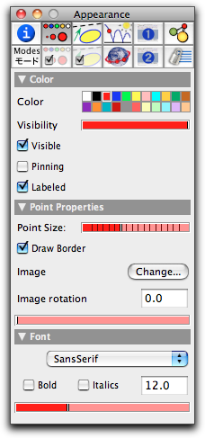
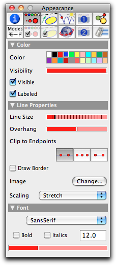
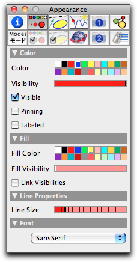
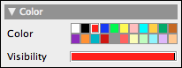
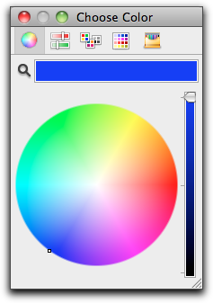
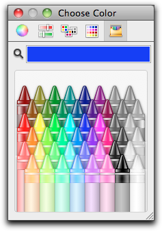
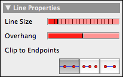
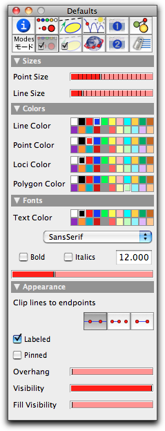
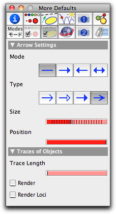

Inspecting Appearance
With the inspector you can control the appearance of the geometric objects. There are two levels on which this can be done. The individual appearance inspector is responsible for the currently selected elements. There you can inspect and change the properties of the currently selected items. The default settings are not affected by this. The main setup for appearance issues can be accessed via the button
 . This section focuses on these basic appearance settings. The following pictures show the parameters for points, lines, and circles that can be inspected.
. This section focuses on these basic appearance settings. The following pictures show the parameters for points, lines, and circles that can be inspected. |  |  | |||
| Point appearance | Line appearance | Circle/polygon appearance |
Each of these windows has controls for color and visibility. Some of the parameters are specific to the inspected objects.
Color and Opacity
For changing the color of the selected elements you simply click on one of the little boxes in the color palette. The color of the selected objects will change immediately.
 |
| The color palette |
It may be the case that you are not satisfied with the color choices offered by Cinderella. You can change a color value in the palette by double-clicking the corresponding box. A color-chooser window pops up in which you can adjust the color of the palette entry. Depending on your operating system, this color chooser may look slightly different. Usually, several different ways of selecting a color are provided. On an Apple Macintosh, two of these ways of selection look as follows:
 |  |
|
| Color wheel | Extended palette |
It is important to know that by changing the color of an entry in the palette, you change the color of all geometric elements associated with this color entry.
Next to the color palette you also have a slider with which you can adjust the opacity of the elements. The opacity can vary from "absolutely invisible" to "solid."
 |
| Grades of opacity |
Absolutely invisible elements are good for auxiliary constructions that should not disturb the rest of the drawing. Slightly visible elements can be used for parts of a construction that are of minor importance. For an element to take active part in the views (being movable and selectable), it needs an opacity of at least 20 percent. You can select invisible elements in the textual view. They cannot, however, be used for clipping lines. Another way to make points or lines invisible is to give them a size of zero.
In Cinderella.2 it is also possible to fill circles (in contrast to previous releases). Fill colors can be controlled by the fill color properties. The opacity of interior and border can be controlled individually.
Size
There are also sliders provided for the control of the size of objects. There is an individual slider for all points, and another slider for lines and circles.
 |
| Possible sizes of points |
Points of size zero are very useful objects. They are invisible, but they are selectable and movable, and they still serve as active clipping points for clipping lines. This makes them ideal elements to use when you want a line that you can move by grabbing its endpoints. This obviates the need to create unnecessary "decorations" with visible points.
Clipping
You can control whether a line is "clipped." For this purpose the inspector offers three buttons that turn clipping on and off.
 |
| Controls for clipping, line size and overhang |
An unclipped line will be drawn over the whole extent of a view. A clipped line can be truncated in two different ways. The second button clips a line defined by two points with respect to exactly these points. The third button clips with respect to all points that are incident to the line. The rules that govern this clipping logic are a bit intricate, but they lead to natural behavior:
- To be a "clipping point" of a line the point must be incident to the line. Furthermore, the point must not be completely invisible, and it must not lie at infinity. Hidden clipping points can be created by setting the size of a point to zero.
- All clipping points of a line are consulted for the clipping.
- If the line has at least two clipping points, then the portion of the line that reaches from the first clipping point of the line to the last clipping point is drawn.
- If there are fewer than two clipping points, the line is not clipped.
These rules have the following effect:
- At least a small portion of the line is always shown.
- All visible points incident to the line lie on this portion.
This is what you would expect for geometric drawings. The decision as to whether a point is (always) incident to a line is made by the automatic theorem checking capacity of Cinderella.2. In this way, correct and mathematically consistent behavior is ensured.
Overhang
It is often undesirable to have a clipped line end directly at certain points. It frequently looks much nicer to have some overhang that suggests that the line continues farther. You can control the size of an overhang using the overhang slider. The slider's position adjusts the overhang on both sides between 0% and 50% of the line's total length.
 |
| Pascal's theorem with individual colors, sizes, and overhang |
Default Settings
There are two other information blocks in the inspector that are accessible via the buttons
 and
and  . Changes that are made there affect all selected elements and at the same time define the default settings for elements that will be constructed in the future.
. Changes that are made there affect all selected elements and at the same time define the default settings for elements that will be constructed in the future. |  |
|
| Basic appearance defaults | Arrow and trace defaults |
Page last modified on Sunday 31 of July, 2011 [10:28:06 UTC].
The original document is available at
http://doc.cinderella.de/tiki-index.php?page=Inspecting%20Appearance